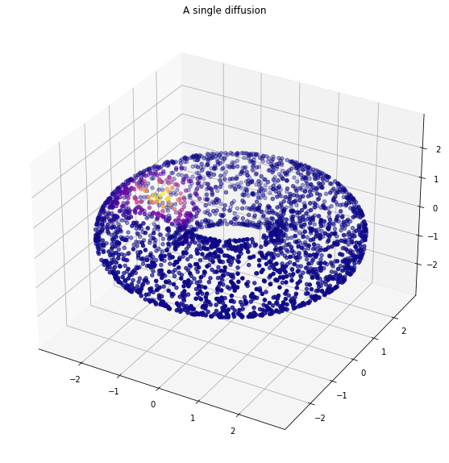

from diffusion_curvature.laziness import curvatureimport matplotlib.pyplot as pltimport numpy as npdef minmaxscale(x): x = np.array(x) x = x -min(x) x /=max(x).astype(float)return x
The autoreload extension is already loaded. To reload it, use:
%reload_ext autoreload
X,ks = torus(n=5000)P_anis = DiffusionMatrix(X,kernel_type="anisotropic",sigma=0.5)plot_3d(X,P_anis[0],"A single diffusion")

ds = curvature(P_anis,diffusion_powers=8,aperture=20,dynamically_adjusting_neighborhood=False,smoothing=1, avg_transition_probability=True)lim = np.max(np.linalg.norm(X,axis=1))fig = plt.figure(figsize=(10,10))# scale both dc curvature and gaussian curvature to be in same rangeds = minmaxscale(ds)ks = minmaxscale(ks)# Diffusion Curvatureax = fig.add_subplot(211,projection='3d')ax.axes.set_xlim3d(left=-lim, right=lim)ax.axes.set_ylim3d(bottom=-lim, top=lim)ax.axes.set_zlim3d(bottom=-lim, top=lim)im1 = ax.scatter(X[:,0],X[:,1],X[:,2],c=ds,cmap="plasma")ax.set_title("Diffusion Curvature")# Ground Truth Comparisonax = fig.add_subplot(212,projection='3d')ax.axes.set_xlim3d(left=-lim, right=lim)ax.axes.set_ylim3d(bottom=-lim, top=lim)ax.axes.set_zlim3d(bottom=-lim, top=lim)im2 = ax.scatter(X[:,0],X[:,1],X[:,2],c=ks,cmap="plasma")ax.set_title("Gaussian Curvature")# Set colorbar along sidecax = plt.axes([0.75, 0.1, 0.007, 0.8])plt.colorbar(im1,cax = cax)plt.show()
Interestingly, the adaptive anisotropic kernel does a much better job here.
P_anis = DiffusionMatrix(X,kernel_type="adaptive anisotropic",k=20)plot_3d(X,P_anis[0],"A single diffusion")
ds = curvature(P_anis,diffusion_powers=32,aperture=20,dynamically_adjusting_neighborhood=False,smoothing=1, avg_transition_probability=True)lim = np.max(np.linalg.norm(X,axis=1))fig = plt.figure(figsize=(10,10))# scale both dc curvature and gaussian curvature to be in same rangeds = minmaxscale(ds)ks = minmaxscale(ks)# Diffusion Curvatureax = fig.add_subplot(211,projection='3d')ax.axes.set_xlim3d(left=-lim, right=lim)ax.axes.set_ylim3d(bottom=-lim, top=lim)ax.axes.set_zlim3d(bottom=-lim, top=lim)im1 = ax.scatter(X[:,0],X[:,1],X[:,2],c=ds,cmap="plasma")ax.set_title("Diffusion Curvature")# Ground Truth Comparisonax = fig.add_subplot(212,projection='3d')ax.axes.set_xlim3d(left=-lim, right=lim)ax.axes.set_ylim3d(bottom=-lim, top=lim)ax.axes.set_zlim3d(bottom=-lim, top=lim)im2 = ax.scatter(X[:,0],X[:,1],X[:,2],c=ks,cmap="plasma")ax.set_title("Gaussian Curvature")# Set colorbar along sidecax = plt.axes([0.75, 0.1, 0.007, 0.8])plt.colorbar(im1,cax = cax)plt.show()
Ellipsoid
Note! The Ellipsoid’s sampling currently appears to be broken, in that it samples from the top and bottom of the ellipsoid in excess to the sides, creating little spots of extremely compressed points.
X_ellipsoid, ks_ellipsoid = ellipsoid(n=5000)P_anis_ellipsoid = DiffusionMatrix(X_ellipsoid,kernel_type="anisotropic",sigma=0.7,k=10)plot_3d(X_ellipsoid,P_anis_ellipsoid[0],"A single diffusion",use_plotly=True)
Unable to display output for mime type(s): application/vnd.plotly.v1+json
ds = curvature(P_anis_ellipsoid,diffusion_powers=8,aperture=10,dynamically_adjusting_neighborhood=False,smoothing=1, avg_transition_probability=True, verbose =True)plot_3d(X_ellipsoid,ds,title="Diffusion Curvature on Ellipsoid")